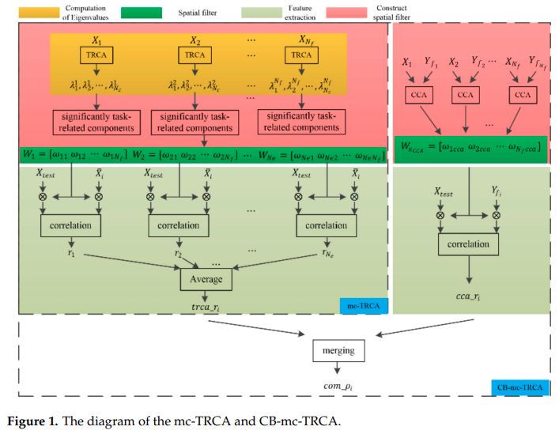

视频编码文献
2020
文章
原理：
刺激包括帧频与步频，主要响应为帧频。
实验设计：对比了闪烁，棋盘格SSMVEP和步态运动
每帧刺激重复7 5 6 4次。响应频率为8.57 12 10 15Hz.步频为0.526 0.75 0.625 0.938Hz
结果
结果中有2f的差频
CCA分类
2021
文章
实验一样，用有训练算法进行分类，提出了基于TRCA的CB-mc-TRCA算法

结果
文章
刺激生成方法
M : 呈现的图片数
N : 每张图片重复次数，呈现N/60s
运动频率： 60/（M*N）
帧频：60/N
离线实验
探究不同帧率的响应。帧率变化为4-15Hz(4Hz, 4.29Hz, 4.62Hz, 5Hz, 5.45Hz, 6Hz, 6.67Hz, 7.5Hz, 8.57Hz, 10Hz, 12Hz and 15Hz, i.e. N = 15, 14,…, 4) ，其中N为重复的帧数。
离线结果
诱发的响应在低频部分响应较高
实验流程

实验演示
刺激频率 6Hz, 5Hz, 4.28Hz and 5.45Hz
在线结果
分类方法： 第一个block用CCA,其余的用TRCA
2022
文章
文章分析了视觉BCI中使用的瞬态脑电图（EEG）反应，即视觉诱发电位（VEP）/运动起始VEP（mVEP）和稳态反应（SSVEP/SSMVEP）在年轻组（年龄在22至30岁之间）和老年组（年龄在60至75岁之间）之间与年龄相关的差异。
视觉刺激包括闪烁、运动棋盘和动作观察（AO），均设计为周期性频率。AO刺激是利用一些手部动作（包括抓握、外翻、拇指捏）的视频来生成的。18 名老人和 18 名学生参加了实验。实验采用了三种脑电图算法，即典型相关分析 (CCA)、任务相关成分分析 (TRCA) 和extended-CCA。
与年轻受试者相比，老年人组在运动开始时引起的 P1 振幅明显更高，这可能是老年人使用基于 mVEP 的 BCIs 的潜在优势。这项研究还首次表明，基于 AO 的 BCI 对老年人群是可行的。不过，还需要针对老年受试者的新算法，尤其是在识别 AO 目标方面。
刺激范式
闪烁，棋盘运动，拇指捏
实验流程
刺激频率 6, 5, 4.615, and 6.667 Hz. For the AO stimulus, the frequencies of the action movement were 0.6, 0.83, 0.58, and 1.11 Hz, respectively (M_AO = 10, 6, 8, and 6, respectively).
实验结果
分类结果
总结
- 频率生成基于刷新相同的图片数，没有使用类似采样正弦的操作来生成更多的帧频
- 没有研究产生响应的动作本身。就是真正起作用的部分是什么
- 从RSVP的角度出发，不需要一个完整的动作，只需要帧数不同。
- 强调的是帧频与动作频率，但是动作频率很弱，可以不用考虑。